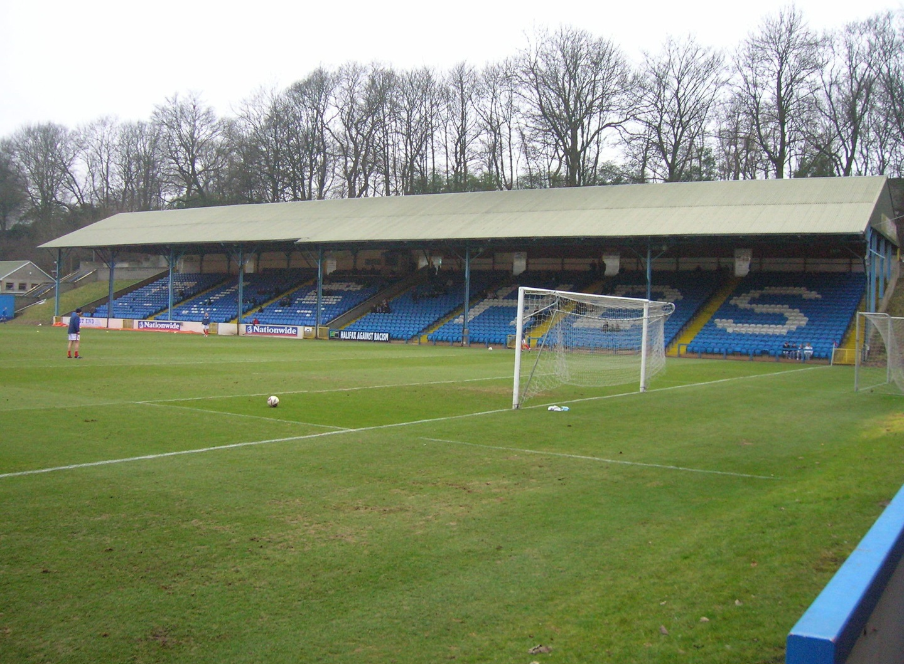

우승기록
프리미어 리그 : 1936-37, 1967-68, 2011-12, 2013-14, 2017-18, 2018-19, 2020-21, 2021-22, 2022-23
EFL 챔피언십 : 1898-99, 1902-03, 1909-10, 1927-28, 1946-47, 1965-66, 2001-02
FA컵 : 1903-04, 1933-34, 1955-56, 1968-69, 2010-11, 2018-19, 2022-23
EFL컵 : 1969-70, 1975-76, 2013-14, 2015-16, 2017-18, 2018-19, 2019-20, 2020-21
FA 커뮤니티 실드 : 1937, 1968, 1972, 2012, 2018, 2019
UEFA 컵위너스컵 : 1969-70
UEFA 챔피언스 리그 : 2022-23
홈구장

하이드 로드
개장일: 1887년 9월 17일
폐장년도: 1923년
수용인원: 40,000명
위치: 맨체스터 어드윅
메인 로드
개장일: 1923년 8월 25일
폐장일: 2003년 5월 11일
수용인원: 최대 88,000명 / 폐장 당시 35,150명
위치: 맨체스터 모스사이드
건설비용: 10만 파운드
그라운드 크기: 107m x 71m
에티하드 스타디움
개장일: 2003년 8월 10일
수용인원: 53,400명
위치: 맨체스터 M11 3FF 에티하드 캠퍼스
건설비용: 1억 1,200만 파운드
그라운드 크기: 105m x 68m
UEFA 등급: ★★★★
2022-23 시즌 주요 선수 ( 3 - 2 - 4 - 1 )
9 Erling Haaland
16 Rodri
5 John Stones
10 Jack Grealish
8 Ilkay Gundogan

17 Kevin De Bruyne
20 Bernardo Silva
6 Nathan Ake
3 Ruben Dias
25 Manuel Akanji
31 Ederson Moraes
2022-23 시즌 감독과 전술
펩 과르디올라
대수: 43대
감독 기간: 2016년 2월 1일 ~
사용 포메이션: 3 - 2 - 4 - 1
장점: 포지션 플레이 극대화, 강한 전방 압박
단점: 전술적 유연함 부족, 토너먼트 결정적 경기에서의 급격한 전술 변화
역사적인 경기

2011-12 PL 38R
2012년 5월 13일
맨시티 vs QPR (3 vs 2)

2022-23 UCL 결승
2023년 6월 11일
맨시티 vs 인테르 (1 vs 0)